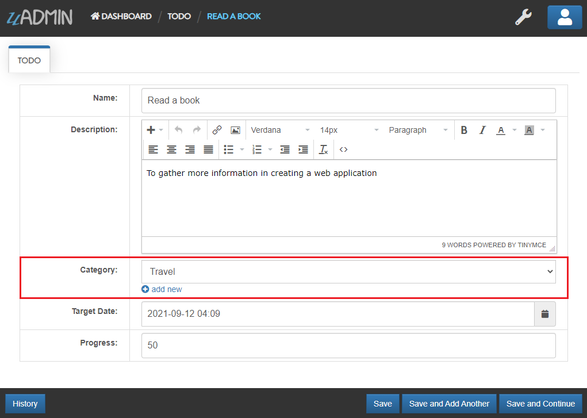
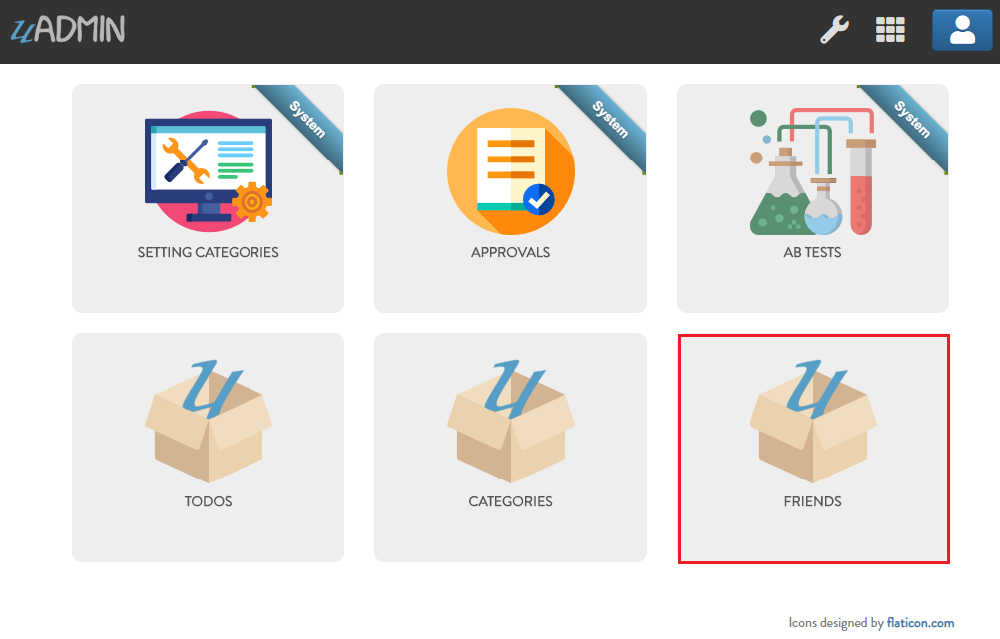
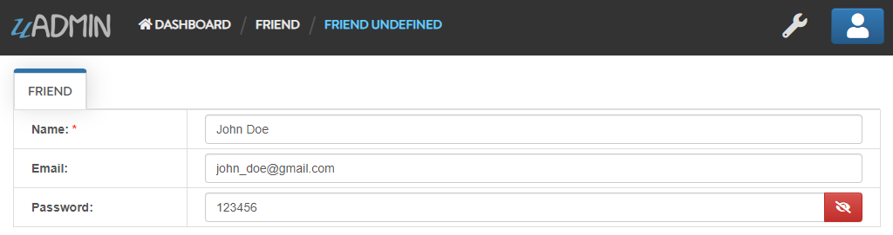
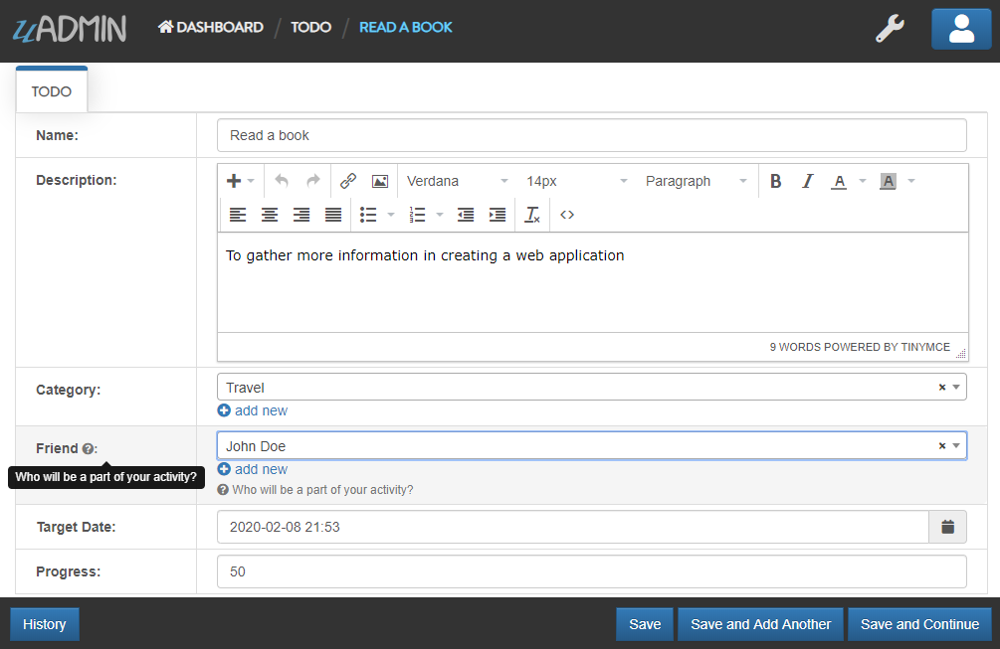

uAdmin Tutorial Part 4 - Linking Models¶
Linking a model to another model is as simple as creating a field using a foreign key. Foreign Key is the key used to link two models together.
What is the purpose of the foreign key? The purpose of the foreign key is to ensure referential integrity of the data. In other words, only values that are supposed to appear in the database are permitted.
In the example below we linked the Category model into Todo model, now the Todo model will return its data as a field in the Category model.
package models
import (
"time"
"github.com/uadmin/uadmin"
)
// Todo !
type Todo struct {
uadmin.Model
Name string
Description string `uadmin:"html"`
Category Category // <-- Category Model
CategoryID uint // <-- Category ID
TargetDate time.Time
Progress int `uadmin:"progress_bar"`
}
Result
Create a file named friend.go inside your models folder with the following codes below:
package models
import (
"github.com/uadmin/uadmin"
)
// Friend Model !
type Friend struct {
uadmin.Model
Name string `uadmin:"required"`
Email string `uadmin:"email"`
Password string `uadmin:"password;list_exclude"`
}
Now register the model on main.go where models is the package name and Friend is the model name:
func main() {
uadmin.Register(
models.Todo{},
models.Category{},
models.Friend{}, // <-- place it here
)
uadmin.StartServer()
}
Set the foreign key of a Friend model to the Todo model and apply the tag “help” to show that who will be a part of your todo activity.
package models
import (
"time"
"github.com/uadmin/uadmin"
)
// Todo Model !
type Todo struct {
uadmin.Model
Name string
Description string `uadmin:"html"`
Category Category
CategoryID uint
// Friend Model
Friend Friend `uadmin:"help:Who will be a part of your activity?"`
// Friend ID
FriendID uint
TargetDate time.Time
Progress int `uadmin:"progress_bar"`
}
As expected, the Friend model is added in the uAdmin Dashboard.
Let’s create a new data in the Friend model.
Result
<<<<<<< HEAD =======
=======
 >>>>>>> de25cdd8a29ca2bb2c2df08be00b703b967aaed5
>>>>>>> de25cdd8a29ca2bb2c2df08be00b703b967aaed5
As you can see, the password field is not shown in the output. Why? If you go back to the Friend model, the password field has the tag name “list_exclude”. It means it will hide the field or column name in the model structure.
Go back to Todo model and see what happens.
Congrats, now you know how to link a model using a foreign key.
Click here to view our progress so far.
In the next part we will talk about register inlines and how to create a drop down list in the field manually.
<<<<<<< HEAD =======